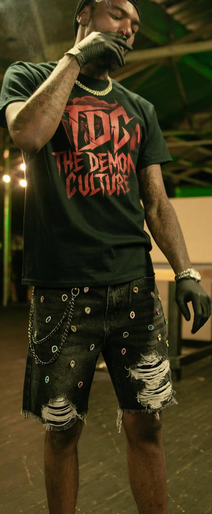
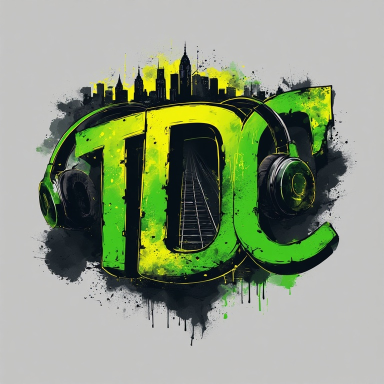
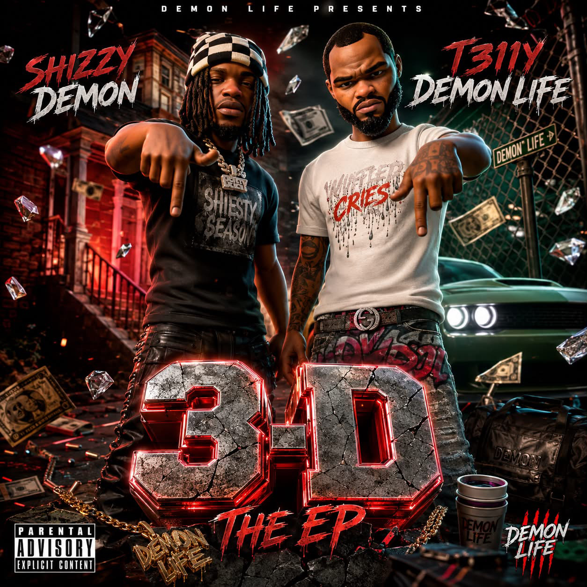

AFFILIATE PROFILE / MID-2022 → CREATIVE CONNECTION
T311Y
DEMON LIFE.
Benny Bundles met T311Y Demon Life in mid 2022 through A00 Rico. Their first home-studio session produced “Ha-Ha.” Benny remained connected through later studio sessions and eventually contributed project artwork and visual identity work across multiple releases.
STUDIO / RELATIONSHIP HISTORY
One session became a longer creative connection.
01 / MID 2022A00 Rico introduction
Rico brought T311Y to Benny’s home studio while Rico and Benny were recording together.
02 / FIRST SESSIONHa-Ha
The session became the first documented recording connection among Benny, Rico and T311Y.
03 / DEVELOPMENTEngineering standard
The performance pushed Benny to recognize the need for a stronger recording chain and engineering setup.
04 / AFTERWARDStayed connected
Benny accompanied later studio sessions and continued the working relationship.
05 / VISUAL WORKProject artwork
The relationship later expanded into cover art and identity work.
PROJECT ARTWORK / REPOSITORY-BACKED SET
Artwork + identity.

